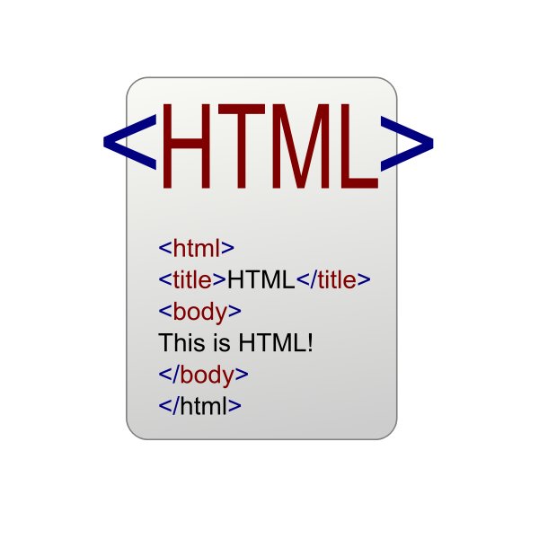

Proposito del Sitio
EL proposito principal del sitio web es dinamizar el aprendizaje de forma virtual con relacion a los Fundamentos de HTML y la Interaccion humano - ordenador, para que el usuario del sitio al finalizar la lectura tenga un conocimiento basico de lo que podemos realizar con el lenguaje de marcado para la elaboracionde paginas web.
Fundamentos de HTML

Segun Ainoa Celaya Luna HTML (Hypertext Marckup Languague o lenguaje de marcas de Hipertexto).
Es un lenguaje de programación que utiliza una serie de códigos llamados etiquetas que van
definiendo los elementos que componen una página web: texto, imágenes etc. esas etiquetas serán
interpretadas por un programa navegador de internet que mostrara adecuadamente la página web al
usuario.
Un documento HTML no es más que un archivo de texto, por tanto, para crear o modificar archivos
HTML basta con utilizar un editor de texto simple como el block de notas de Windows.
Estructura de un documento HTML
Todas las paginas HTML contiene los mismos elementos básicos:
• Doctype: Es la primera línea del código que tiene que estar en cualquier documento
HTML, esta línea indica al navegador que especificación de HTML se esta utilizando.
• Html:> El par de etiquetas se encuentran al principio y al final de todo documento HTML
y sirve para indicar que todas las aplicaciones que pueden analizar el texto sin formato que esa
página utiliza HTML.
• Head: Las etiquetas delimitan el contenido de la cabecera del documento, es decir, el
título de la página y una información que no aparece en la pantalla.
• Title: Las etiquetas rodean el texto del título. El titulo aparece en la barra del
titulo del navegador web cuando presenta la página. Normalmente va dentro del elemento
• Meta:Permite aportar información al documento, para su mejor identificación o indexación por los motores de búsqueda.
• Body:las etiquetas rodean el contenido visible de la página, también puede llevar incluida información sobre las propiedades de la página, por ejemplo
Etiquetas HTML mas comunes
b: Aplica negrilla al texto incluido entre las etiquetas.
h1,h2,h3,h4,h5,h6: Indican 6 niveles de formato de encabezados, en los que h1
delimitaria el tipo de fuente de mayor tamaño.
p: Delimita un parrafo de texto.
br: Introduce un salto de linea.
ul: Lista no numerada.
img src="Direccion de la imagen": Inserta una imagen que se encuentra en la
ruta indicada por "Direccion de la imagen".
ol: Lista numerada.
table: Define donde comienza y donde termina la tabla.
"Celaya Luna, A. (2014). Creación de páginas web: HTML5. p. 1 - 60. "
Fundamentos de HTML
Interacción Humano Ordenador

La diciplina de interacción persona ordenador(IPO) se conoce en la comunidad internacional como
Human-Computer Interaction (HCI), es la diciplina relacionada con el diseño, evaluacion e
implementacion de sistemas imformaticos interactivos para le uso de seres humanos, y con el estudio
de los fenómenos más importantes con los que se está relacionado.
Su objetivo principal es incrementar la productividad de los equipos y minimizar los errores al
tiempo que se dota a los usuarios de una experiencia segura, confortable y satisfactoria.
Una interfaz es una “superficie” de contacto (Laurel & Mountford, 1990), que refleja las propiedades
físicas de los usuarios que interactúan, las funciones a realizar, y el balance de poder y control.
La interfaz forma parte de un entorno cultural, físico y social, y por tanto, es necesario tener en
cuenta una serie de factores al momento de diseñarla. Es así como el diseño de la interfaz se ha
convertido en un elemento crítico en el desarrollo de productos software y hardware, y es uno de los
principales factores que influyen en el éxito y competitividad de las aplicaciones. Actualmente, los
sistemas interactivos prestan una atención cada vez mayor a las interfaces, demandando cambios en el
desarrollo de estos productos. Un sistema interactivo ya no es sólo juzgado por su capacidad de
realizar operaciones sino también por su capacidad de comunicarlas adecuadamente al usuario.
Entre los diferentes tipos de dispositivos de interaccion persona ordenador tenemos los siguientes :
Dentro del campo de la interacción persona-computador, se considera una serie de disciplinas tales como:
Informática: La evolución tecnológica e informática es la que ha condicionado la evolución de la IPO como disciplina y práctica profesional. Entre áreas de la informática que ayudan a la IPO destacan la ingeniería del software, la inteligencia artificial y la información cognitiva.
La ingeniería del software: trata sobre metodologías y principios para desarrollar software de calidad, estudiando la facilidad de uso y usabilidad, principalmente con la aparición de las interfaces gráficas de usuario.
La inteligencia artificial: trata el desarrollo de sistemas que emulan un comportamiento racional e inteligente que permite introducir elementos que simulen aspectos del comportamiento humano.
La informática cognitiva: trata de comprender el funcionamiento de la mente humana para conseguir reproducir un funcionamiento similar en ordenadores.
Granollers i Saltiveri, T. G. (2012). Diseño de sistemas interactivos centrados en el usuario. Editorial UOC. p. 211 - 264. Interacción Persona-Ordenador